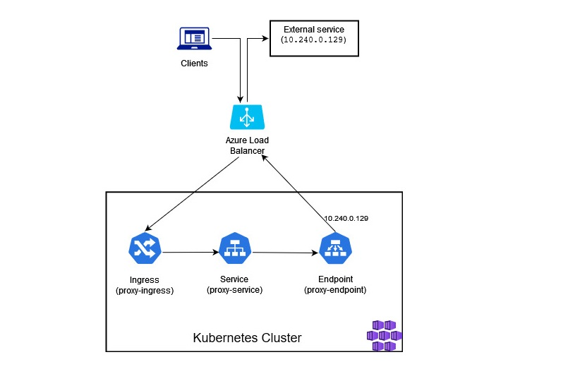
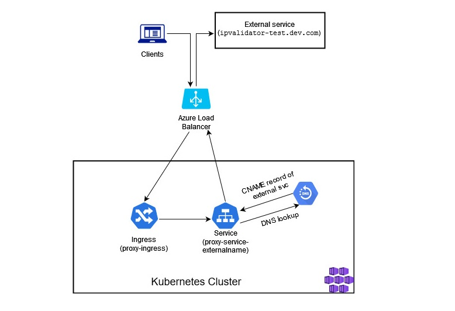

Using Kubernetes Service for Proxying to External Services
So, recently I’ve faced a scenario where I got a chance to dig more into different Kubernetes Service types and experiment with those. I would like to share about one of the experiments where I tested several Kubernetes Service types in order to implement proxying of the requests to external services from Kubernetes cluster.
Why would proxying to external services from Kubernetes cluster be relevant?
There may be multiple reasons for why you would look into setting up this kind of proxying to external services from Kubernetes cluster.
A few use case examples may be:
- You have a hybrid deployment where some services are running in a Kubernetes cluster and some services haven’t been migrated yet and are running, for example, on-premises.
- You have services that will always reside outside of the cluster due to specific requirements like, for instance, an object storage or a database.
- You have a service that is located in a different datacenter than the Kubernetes cluster.
- You’re performing a larger re-structuring/refactoring in your Kubernetes cluster and would like to avoid downtime, as well as have an easy way to redirect traffic during migration.
Scenario where this became relevant for me was like this: I have a single-tenant application that is used by hundreds of customers. Some instances of this application are already hosted in Kubernetes (Azure Kubernetes Service (AKS) in this case), but most of the instances are still hosted on hundreds of Azure VMs which are using only dynamic IPs. A new component that was added to the core application sends requests to an external service’s API that is hosted by a third-party. This external API accepts requests coming only from static IPs, i.e. you will need to have a single static IP that the third-party will need to whitelist in order for you to call their APIs. This would work fine for the instances hosted in Kubernetes since we’re already using Ingress Controller there with a static public IP that the requests will be sent from but, as you may guess, this wouldn’t work for most of the instances that are still deployed on Azure VMs with dynamic IPs.
For those cases there was a need to find a different solution.
When an AKS cluster is created it will by default create an external Azure Load Balancer and assign it a public IP which is only valid for the lifespan of the LoadBalancer Service. If you need a static IP, you need to explicitly create it and assign it to your Kubernetes services. If you’re also using a public facing Ingress Controller with static external IP, you will need to ensure that you have properly defined the necessary IP addresses in the Azure Load Balancer. You must also verify that you’ve defined the correct IP rule order in Azure Load Balancer Frontend IP Configuration section. It’s important because the first frontend IP from the list will be used by Azure Load Balancer for the egress traffic from the AKS cluster. Official Microsoft documentation describes this pretty well: Egress traffic in AKS.
Scenario that I’ve mentioned above can be resolved in multiple ways:
-
Set up a dedicated VM with installed transparent proxy. You could set up a dedicated VM with a static IP and install a transparent proxy solution that would forward all the requests to the respective external service. Disadvantage of this approach is that both the transparent proxy and the VM where it’s deployed must be continuously maintained, updated, secured and protected from, for instance, DDoS attacks.
-
Use a web traffic load balancer (for example, Azure Application Gateway). Another possiblity which works pretty well is to set up a web traffic load balancer, like Azure Application Gateway, that could be configured with a static IP. I will not go into details on how to do that, but I think that following guide describes pretty well how you could use Azure Application Gateway to redirect web traffic: Tutorial: Redirect web traffic using Azure PowerShell. The disadvantage of this approach is additional cost - in case of Azure Application Gateway, depending on the size of the gateway, the price will vary, and the service is charged per hour. Depending on which location the service is deployed to,- at the point of creating this blog post, the price is defined to vary from 22 to almost 300 dollars a month.
It’s important to note that if you’re setting up Azure Application Gateway, you can’t use Redirection rule for the proxy scenario, since it will be a pure URL redirection where no intervention with the HTTP request will happen, and the request will still be sent from the original client IP. You will need to set up a backend pool pointing to the external service - then, when request hits Azure Application Gateway, it will set up a new session with the backend, assigning the request a new IP which would be equal to the static IP of the gateway. It will also add the source IP of the request as a
X-Forwarded-ForHTTP request header. More information can be found here: How an application gateway routes a request
Since I already had parts of the workload running in Kubernetes and the remaining instances were planned to be migrated to Kubernetes in the near future it was clear that the solution I needed to find was temporary. Once all of the instances are migrated to Kubernetes, this problem will be solved by itself. And the cherry on top is that we will need to account only for one static IP address that would need to be whitelisted - the public IP of the Azure Load Balancer that is configured for the respective AKS cluster! So, why not use the additional capabilities in the existing Kubernetes platform in order to provide this temporary solution for VM-hosted workloads? That’s when Kubernetes Service came into the picture!😺
What is a Kubernetes Service and what kinds of Kubernetes Service can be created?
Let’s briefly clarify what a Kubernetes Service is and what types of Kubernetes Service exist.
Kubernetes Service is an abstraction over a logical set of Pods (simply said, a collection of Pods) that your application is running on in Kubernetes. As you may know, Pods are ephemeral and can die at any moment. When a Pod dies, it gets replaced with a new Pod that gets assigned a new IP address, which means that you can’t purely rely on IP addresses of the Pods in order to route your traffic. Kubernetes Service is a resource that solves precisely this problem: it’s placed in front of a group of Pods that your application is deployed to, and defines the policies for how application Pods must be accessed, including IP routes. More on this in official Kubernetes documentation: Service.
You can create following Kubernetes Service types:
-
ClusterIP (default): internal Service with assigned cluster-internal IP - will only be reachable from inside the Kubernetes cluster.
-
NodePort: Service is exposed at a static port on each Node’s IP and can be reached from outside the cluster by calling
[NodeIP]:[NodePort]. ClusterIP Service is created automatically. -
LoadBalancer: this Service type is normally used by the cloud providers. The Service is exposed and reachable from the outside of the cluster via cloud provider’s load balancer. For example, in case of Azure Kubernetes Service, Azure Load Balancer will be used. ClusterIP and NodePort Services are created automatically.
-
ExternalName: this Service type is mapped to a respective CNAME record.
A Kubernetes Service can also be created with selectors and without selectors.
-
Service with selectors is a classic implementation where a set of Pods are abstracted with a Service. Based on the defined selector the Service will know which Pods it needs to handle access for. An example of such a selector may be application name, but you can define whatever selector you want, as long as you remember to define the same selector for the Pods AND for the Service. When a Service with selector is created, a respective Endpoint Object is created automatically - it will handle a list of IPs that the Service will redirect traffic to.
-
Service without selectors can be used when you want to expose backend types that are different from Pods: for example, an external database, a service in another namespace or an external service, as it was required in my scenario. When a Service without selector is created, no Endpoint Object is created automatically, so you need to create it manually and provide the backend address that the Service will route the traffic to. If ExternalName Service is created, no Endpoint Object is needed.
Please note that you need to provide identical name for the Service AND the Endpoint in order for the Service to be mapped to the Endpoint automatically.
Headless Service is a Service without cluster IP - you can use this Service when you want to use a specific service discovery mechanism that is different from the one provided by Kubernetes. No load balancing or proxying is done for this Service by Kubernetes and no cluster IP is being allocated for the Service. It can be defined with and without selectors, but please note that usage of selectors is what defines how DNS is configured for the headless Service.
Endpoint vs. EndpointSlice
With a more vast usage of Kubernetes it became clear that the original Endpoint resource has limitations, especially when it comes to load-intensive, large-scale environments, where increased amount of network endpoints was required. That’s why EndpointSlice got created as a more flexible, better alternative to an Endpoint resource.
EndpointSlice references to a subset of network endpoints, but compared to original Endpoint, multiple EndpointSlices can exist per Service and a single EndpointSlice contains max 100 endpoints by default (this is a configurable setting). This implementation allows for better scalability and extensibility which is very visible at scale.
As of spring 2023 it’s stated that Endpoint resource isn’t going to be removed and will continue to remain supported and stable, but it’s now considered a legacy feature. More and more services now rely on EndpointSlice and you should create EndpointSlice resources instead of Endpoint resources wherever it’s applicable and is supported.
I recommend to check out these links for more information:
Now that we’ve covered the basics, let’s get back to the scenario that I’ve described above and see how we can implement proxying to external services with help of Kubernetes Service without selectors and ExternalName Service. 😼
Implementation description and preparation
I will be using Azure Kubernetes Service cluster for this scenario. As an external service that we’ll be proxying traffic to I’ll be using a small application that I’ve created. This application will check the request it receives and return information about the IP that the request is being sent from, as well as the source IPs that the request forwarding is happening for (if there are any). For illustration purposes I’ve deployed the app to IIS on an Azure Virtual Machine, but it’s a cross-platform .NET 6 app that can be easily deployed in other ways as well. This application can also be used to test web traffic load balancer like Azure Application Gateway, that I’ve briefly mentioned above.
If you would like to use it for testing, you can find the source code on GitHub: IPValidator. Of course, you don’t need to use this app to test this - you can redirect to any external IP of your choice.
I’ve also deployed an NGINX Ingress Controller in my cluster in order to provide access to the applications that are running in the cluster from the outside. Ingress Controller in combination with Ingress resource will ensure that the traffic is routed correctly to the respective Service(s) and Endpoint(s) in the cluster.
Proxy to external services with Service without Selectors
As mentioned above, I will demonstrate two approaches for implementing proxying to external services: by either using a default ClusterIP Service without selectors or an ExternalName Service.
Let’s start by creating a default ClusterIP Service without selectors:
#service.yaml
apiVersion: v1
kind: Service
metadata:
name: proxy-service
namespace: proxy-test
spec:
ports:
- port: 80
protocol: TCP
targetPort: 80
name: http
As you can see we’re not providing any selectors and since we’re using a default Service type (ClusterIP), we don’t need to specify the type either. We only need to specify the Service name and port. I’m using Kubernetes deployment templates, but Helm templates can be used here as well if you would like a more generic deployment of these resources.
Now, if you remember from the previous section, since we’re creating a Service without selectors, no Endpoint is being created for us so we need to create an Endpoint manually and provide an IP address of the external service/application that we want to proxy the requests to. I will use an IP address of IPValidator app that is running on an Azure VM (an IP address provided in the examples below is now inactive and was used only for demonstration purposes😉):
#endpoint.yaml
apiVersion: v1
kind: Endpoints
metadata:
name: proxy-service # Must be equal to Service name for automatic mapping
namespace: proxy-test
subsets:
- addresses:
- ip: 10.240.0.129 # IP address of your external service that you would like to proxy requests to
ports:
- port: 80
Important note on EndpointSlice: ideally, in this case you should create an EndpointSlice resource instead of Endpoint, but at the time of updating this blog post (March 2023), there is a bug in NGINX Ingress Controller that prevents us from doing it. Even though support for EndpointSlice in NGINX Ingress Controller was added with release 3.0.0 in January 2023, there’s an issue with EndpointSlices causing crash of NGINX Pods when Headless Service or Service without selectors is being used: EndpointSlices causes crash (panic) with headless service.
Once the issue above is resolved you should then be able to replace Endpoint implementation above with the EndpointSlice implementation below:
#endpointslice.yaml
apiVersion: discovery.k8s.io/v1
kind: EndpointSlice
metadata:
name: proxy-service
namespace: proxy-test
labels:
kubernetes.io/service-name: proxy-service # Must be present for EndpointSlice and equal to Service name for automatic mapping - with having it in place, you can change the name of EndpointSlice to something else. The official convention is using Service name as the prefix.
addressType: IPv4
ports:
- port: 80
endpoints:
- addresses:
- "10.240.0.129" # IP address of your external service that you would like to proxy requests to
Next, let’s create an Ingress resource in order to enable traffic routing to the newly created Service. If your backend service only accepts HTTPS traffic and you’re using NGINX, in addition to updating the destination port accordingly you will need to add nginx.ingress.kubernetes.io/backend-protocol: "HTTPS" annotation to the Ingress resource definition.
#ingress.yaml
apiVersion: networking.k8s.io/v1
kind: Ingress
metadata:
annotations:
nginx.ingress.kubernetes.io/rewrite-target: /
name: proxy-service-ingress
namespace: proxy-test
spec:
ingressClassName: nginx
tls:
- hosts:
- proxy-service.dev.com
secretName: tls-dev-com
rules:
- host: proxy-service.dev.com
http:
paths:
- backend:
service:
name: proxy-service # Here you specify the name of the Service traffic must be routed to
port:
number: 80
path: /
pathType: ImplementationSpecific
And it’s done!🥳
The flow would look something like this:

If we now go to https://proxy-service.dev.com, we’ll get redirected to the respective external service IP which in this example is 10.240.0.129. IPValidator provides us a response saying that initially the client request came from the Node IP where we’ve deployed our proxy-service Service, but it was then sent further from the Kubernetes cluster via Azure Load Balancer with a configured static IP of our choice - that’s the IP that can be whitelisted by a third-party so that we can access their APIs!

Now, let’s see how the same can be achieved with ExternalName Service!😺
Proxy to external services with ExternalName Service
If you remember from the earlier section, for ExternalName Service we don’t need to bother about creating an Endpoint/EndpointSlice,- we just need to specify correct Service type and provide the FQDN of the external service we want to proxy the requests to. So our Service definition will look something like this:
#service.yaml
apiVersion: v1
kind: Service
metadata:
name: proxy-service-externalname
namespace: proxy-test
spec:
type: ExternalName
externalName: ipvalidator-test.dev.com # Provide the FQDN of the external service you want to proxy requests to
Now, we can create an Ingress resource - the implementation is pretty much the same as the one we created in the previous example, for the default Service without selectors. The only difference is that now we’re pointing to the ExternalName Service instead:
#ingress.yaml
apiVersion: networking.k8s.io/v1
kind: Ingress
metadata:
annotations:
nginx.ingress.kubernetes.io/rewrite-target: /
nginx.ingress.kubernetes.io/upstream-vhost: ipvalidator-test.dev.com
name: proxy-service-externalname-ingress
namespace: proxy-test
spec:
ingressClassName: nginx
tls:
- hosts:
- proxy-service-externalname.dev.com
secretName: tls-dev-com
rules:
- host: proxy-service-externalname.dev.com
http:
paths:
- backend:
service:
name: proxy-service-externalname # Here you specify the name of the ExternalName Service traffic must be routed to
port:
number: 80
path: /
pathType: ImplementationSpecific
And we’re all set!😻
The flow would look something like this:

If we now go to https://proxy-service-externalname.dev.com, we’ll be redirected to https://ipvalidator-test.dev.com.
In this case the egress traffic from AKS cluster uses respective Azure Load Balancer public static IP. In this example the IP is the same one as that was used in the previous example (external static IP of NGINX Ingress Controller). What this means is that it’s still the same IP that the third-party service can whitelist in order for us to be able to call their APIs.
Important note: If you want to use ExternalName Service in AKS with NGINX, you will need to set up NGINX Plus Ingress Controller. It’s not officially supported in Basic version of NGINX. You can read more about it here: Support for ExternalName Services. It may work in some cases though with Basic NGINX Ingress - I was, for instance, able to test proxying with ExternalName Service in Minikube after installing NGINX Ingress Controller add-on. The reason for that is that this functionality is not stable in Basic NGINX Ingress. Even if you manage to make it work once, there are many more issues that may come up afterwards so it’s definitely not a way to go for production workloads - you can find more detailed information in the following GitHub issue: Ingress with a backend service type ExternalName
There are some known challenges with ExternalName Service type, also when it comes to common protocols like HTTP and HTTPS. Challenges are related to the Host header discrepancies in the hostname that ExternalName Service references vs. the actual hostname that is used by the clients inside the Kubernetes cluster. You can read more about the challenges here: Type ExternalName. In order to skip preserving the hostname that was initially set in the request you can add following annotation to your Ingress definition:
ingress.kubernetes.io/preserve-host: "false"(valid for Ingress Controller like, f.ex., Traefik) ornginx.ingress.kubernetes.io/upstream-vhost: [your_external_host](valid for NGINX Ingress Controller).
Additional resources
Below you may find some additional material that may be relevant for more in-depth understanding of different networking concepts in Kubernetes:
- Explanation of what Ingress Controller is and how it’s used in Kubernetes: Ingress Controllers
- Explanation of what Ingress is and how it’s used in Kubernetes: Ingress
- Explanation of Service without selectors: Services without selectors
- Explanation of Headless Service: Headless Services
- Explanation of different Service types: Service Types
- Explanation of EndpointSlice and comparison to Endpoint resource: EndpointSlices
- Explanation of how to create an Ingress Controller with static public IP in Azure Kubernetes Service (AKS): Create an ingress controller with a static public IP address in Azure Kubernetes Service (AKS)
That’s it from me this time, thanks for checking in! If this article was helpful, I’d love to hear about it! You can reach out to me on LinkedIn, GitHub or by using the contact form on this page.😺
Stay secure, stay safe.
Till we connect again!😻